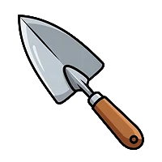

Tool Name:
Trowel
Description:
A small hand tool used for digging small holes, planting, transplanting, and loosening soil.

Where Barangay Sauyo comes together to borrow tools, learn urban farming, and grow food — and friendships — together.
A small hand tool used for digging small holes, planting, transplanting, and loosening soil.
